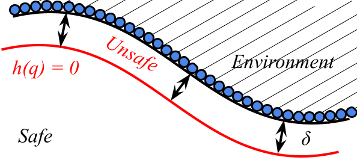
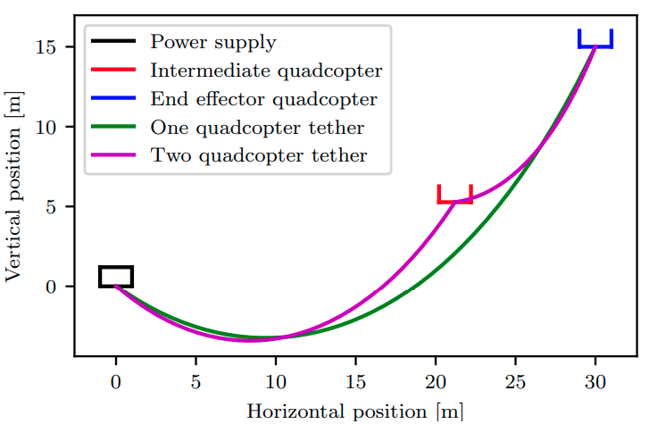

|
Massimiliano de Sa
Hello! My name is Massimiliano (Max) de Sa. I am a PhD student in Control & Dynamical Systems at Caltech, within the Department of Computing + Mathematical Sciences.
Previously, I was an undergraduate student at UC Berkeley, where I graduated in 2023 with a B.S. in Mechanical Engineering and a minor in Mathematics. While there, I worked with Professor Koushil Sreenath on aerial robotics.
Please reach out to me at my email below if you have any questions! Fun linear algebra problems are also welcome :)
Email /
CV /
Github
|
|
|
Research
I'm broadly interested in control theory, dynamical systems, mathematics, and their applications in robotics. In the past, I have enjoyed working on aerial robotics & safety-critical control.
|
|

|
Point Cloud-Based Control Barrier Function Regression for Safe and Efficient Vision-Based Control
Massimiliano de Sa, Prasanth Kotaru, Koushil Sreenath
Preprint /
Video
We formulate control barrier functions over pointclouds and estimate their gradients for fast vision-based control.
|
|

|
Tethered Power for a Series of Quadcopters: Analysis and Applications
Karan P. Jain, Prasanth Kotaru, Massimiliano de Sa, Koushil Sreenath, Mark W. Mueller
arXiv /
Video
We demonstrate power analysis and control for a set of quadcopters with a ground-based power station.
|
|
Teaching & Outreach
As an undergraduate student, I was a uGSI for ME/EECS/BioE C106A, Introduction to Robotics, ME/EECS/BioE C106B, Robotic Manipulation & Interaction, and ME 100, Electronics for the Internet of Things.
You can find the notes I wrote for each of these classes at the links below.
I am currently writing a Python library for robotic manipulation and control education - stay tuned for more!
|
This website was created using Jon Barron's template.
|
|
{kind=link}